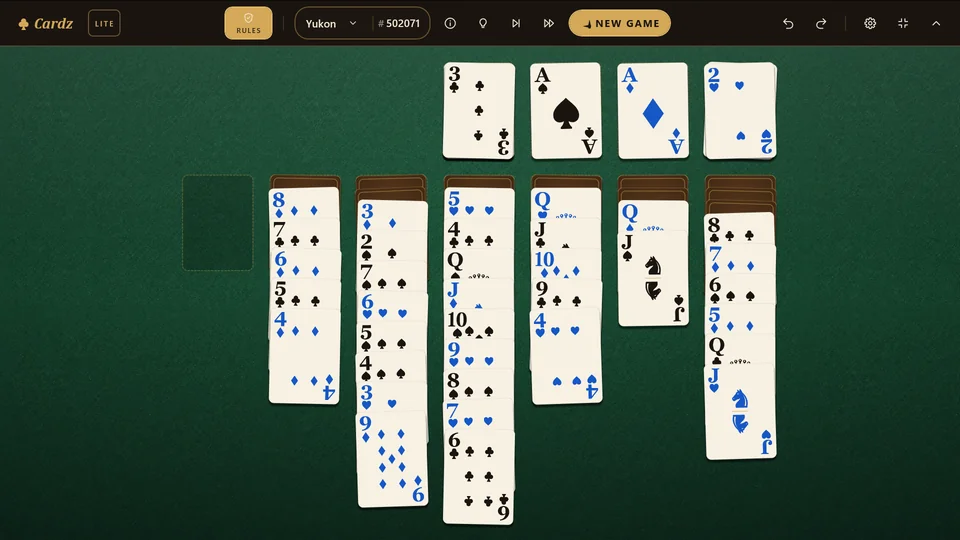

Indices et jeu automatique
Un indice montre un bon coup, et le jeu automatique termine la donne. Ou désactivez les règles.
Cardz Lite
Cardz Lite est l'édition gratuite de Cardz : sept solitaires et six jeux de cartes, avec indices, scores et statistiques.

Jeux
Klondike pioche une ou trois cartes, et Spider se joue à une, deux ou quatre couleurs. Plus FreeCell, Yukon, Golf, Tri Peaks et Pyramid.

Des paires qui font treize
Jeu Scarab
1, 2 et 4 couleurs · Huit suites parfaites
Jeu Neon
Toutes les cartes à découvert
Jeu Monosolid
Dégagez les trois sommets
Jeu Felt House
Déplacez des queues entières d'un coup
Jeu pour daltoniens
À un rang près
Jeu ScarabUn indice montre un bon coup, et le jeu automatique termine la donne. Ou désactivez les règles.
Donnes, victoires, défaites et séries pour chaque jeu. Klondike, Spider, Golf, Tri Peaks et Pyramid notent chaque donne.
Felt House, Scarab, Neon et Monosolid, plus un jeu à contraste élevé et un jeu adapté au daltonisme.
La partie est toujours là quand vous revenez, et l'annulation aussi. Rejouez n'importe quelle donne par son numéro.
Jeu entièrement au clavier, narration pour lecteur d'écran, mouvement réduit, et une table inversée pour les gauchers.
L'application complète